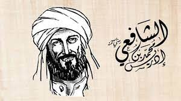

Sejarah
Kelahiran

Imam Syafi'i dilahirkan pada tahun 150 Hijriyah, bertepatan dengan wafatnya Imam Abu Hanifah, guru para ahli fiqih Irak dan imam metode qiyas. Mayoritas riwayat menyatakan bahwa Syafi'i dilahirkan di Ghaza, Palestina, seperti yang diriwayatkan oleh Hakim melalui Muhammad ibn Abdillah ibn Al-Hakam. Ia berkata, "Kudengar Syafi'i bertutur, 'Aku dilahirkan di Ghaza, kemudian ibuku memboyongku ke Asqalan.
Nasab yang Mulia
Nama lengkap Imam Syafi'i adalah Abu Abdillah Muhammad ibn Idris ibn Al-Abbas ibn Utsman ibn Syafi'i ibn Al-Sa'ib ibn 'Ubaid ibn Abd Yazid ibn Hasyim ibn Muthallib ibn Abdi Manaf. Akar nasab Syafi'i bertemu dengan akar nasab Nabi SAW., tepatnya di moyangnya yang bernama Abdi Manaf. Dengan demikian, nasab keluarga Muhammad ibn Idris ibn Abdullah Al-Syafi'i bertemu dengan nasab Nabi, tepatnya di Abdi Manaf sebagai kakek moyang Nabi SAW.
Ayah & Ibu
Ayah: Idris ibn Abbas
Ayah Imam Syafi'i adalah Idris ibn Abbas, beliau berasal dari Tabalah (bagian dari negeri Tahamah yang terkenal). Awalnya beliau bermukim di Madinah, tetapi disana beliau banyak menemui hal yang tidak menyenangkan. Akhirnya beliau hijrah ke Asqalan (kota di Palestina). Beliau pun menetap di sana hingga wafat. Ketika itu Imam Syafi'i masih dalam buaian sang ibu.
Ibu
Ibunda Imam Syafi'i berasal dari Azad, salah satu kabilah Arab yang masih murni. Beliau tidak termasuk kabilah Quraisy, meskipun sekelompok orang fanatik terhadap Imam Syafi'i mengaku-aku bahwa ibunda Imam Syafi'i berasal dari kaum Quraisy Alawi. Pendapat yang benar adalah beliau berasal dari kaum Azad karena riwayat-riwayat yang bersumber dari Imam Syafi'i menegaskan bahwa ibunya berasal dari Azad.
Kepribadian
Ciri Fisik
Ibn Shalah berkata, "Postur tubuh Syafi'i tinggi dan pipinya cekung. Lehernya panjang, demikian pula tulang paha, betis, dan lengannya. Kulitnya cokelat dan rahangnya tidak terlalu lebar. Syafi'i selalu mengecat janggutnya dengan hena (daun pacar) berwarna merah tua. suaranya merdu dan enak didengar. Keningnya lebar, wajahnya tampan dan berwibawa, serta ucapannya fasih. Ia adalah orang yang paling sopan dalam bertutur kata."
Ibn Shalah melanjutkan, "Syafi'i adalah orang yang sering sakit. Diceritakan bahwa ia memiliki hidung yang lancip. Di hidungnya terdapat bekas cacar, di antara bibir bawahnya dan dagu ada sejumput bulu-bulu halus. Wajahnya berseri, giginya sangat rapi dan putih berseri."
Suara yang Merdu
Dalam berbicara, suara Imam Syafi'i terkenal enak didengar. Saat membaca, suaranya merdu. Jika beliau membaca Al-Qur'an, orang-orang akan berkerumun di sampingnya hanya untuk mendengar indahnya lantunan suara dan bacaannya. Saat membaca Al-Qur'an pun beliau sangat menghayati bacaannya sehingga orang-orang turut tenggelam dalam kelembutan suaranya yang merdu. Melalui bacaan Imam Syafi'i, mereka bisa mengambil ibrah sambil menangis tersedu-sedu.
Dalam Berpakaian
Rabi' ibn Sulaiman ditanya, "Bagaimana dengan pakaian Syafi'i?". Beliau menjawab, "Pakaiannya sangat sederhana. Ia tidak pernah memakai pakaian mewah dan mahal. Ia hanya mengenakan kain katun Baghdad. Kadang kala ia mengenakan penutup kepala yang tidak terlalu mahal harganya. Ia banyak mengenakan sorban dan sepatu bot."
Adapun cincinnya, Rabi' menuturkan, "Syafi'i mengenakan cincin di jari kirinya. Di cincin itu terukir kalimat Kafa billahi tsiqatan li Muhammad ibn Idris (Cukuplah Allah sebagai Tuhan yang dipercaya oleh Muhammad ibn Idris).
Karya
Imam Syafi'i memiliki karya yang cukup banyak, tidak seperti imam-imam sebelumnya. Karyanya berisi tentang ushul dan furu', fikih dan dalil-dalilnya, bahkan dibidang tafsir dan sastra. Ibn Zaulaq berkata, "Syafi'i mengarang sekitar dua ratus buku". Al-Marwazi juga berkata dalam khutbahnya, mengomentari karya Syafi'i, "Syafi'i telah mengarang seratus tiga belas kitab di bidang tafsir, fikih, sastra dan lain-lain.
Kitab-Kitab
Dalam kitab Mu'jam al-Buldan terdapat daftar panjang nama kitab yang pernah ditulis Imam Syafi'i. Kitab-kitab itu antara lain:
Sumber: Buku Biografi IMAM SYAFI'I oleh Dr. Tariq Suwaidan - ZAMAN